In order to calculate the force imposed on the tip we used the following
expression for the total energy of the system:
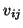
is the interatomic potential between atoms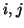
. This interaction energy is a function of both the tip position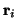
of all atoms (and shells) involved. The energy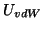
represents the van der Waals interaction between the macroscopic tip and substrate and depends only on the tip height
The last term in Eq. (4) represents the total electrostatic
energy of the whole system. We assume that the Coulomb and covalent
interactions between all atoms is included in the first term in Eq.
(4) and hence should be excluded from  . Therefore,
the energy
. Therefore,
the energy  includes the interaction of the atoms in the
system with the macroscopic tip and substrate. As has been demonstrated,
the correct electrostatic energy should incorporate the work done
by the battery to maintain the constant potential on the electrodes.
It can be written in the following form:
includes the interaction of the atoms in the
system with the macroscopic tip and substrate. As has been demonstrated,
the correct electrostatic energy should incorporate the work done
by the battery to maintain the constant potential on the electrodes.
It can be written in the following form:
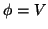
. We also note that the substrate is considered in the limit of a sphere of a very big radius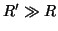
since the metal electrodes formally cannot be infinite. The charge on the tip without charges outside the metals (i.e. when there are only bare electrodes and the polarization effects can be neglected) is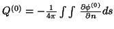
where the integration is performed over the entire surface of the macroscopic part of the tip with the integrand being the normal derivative of the potential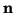
is directed outside the metal. Summation in the second term of Eq. (5) is performed over the atoms and shells of the sample and those of the tip apex which are represented by point charges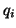
at positions .
Finally,
 in Eq. (5)
is the potential at
in Eq. (5)
is the potential at  due to image charges induced
on all the metals by a unit point charge at
due to image charges induced
on all the metals by a unit point charge at
 .
This function is directly related to the Green function
.
This function is directly related to the Green function
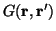
of the Laplace equation,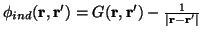
, and is symmetric, i.e.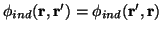
, due to the symmetry of the Green function itself [5]. The total potential at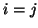
term as well. This term corresponds to the interaction of the charge with its own polarization (similar to the polaronic effect in solid-state physics).
The function
 and, therefore,
the image potential,
and, therefore,
the image potential,
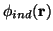
, together with the potential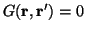
when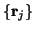
of the point charges